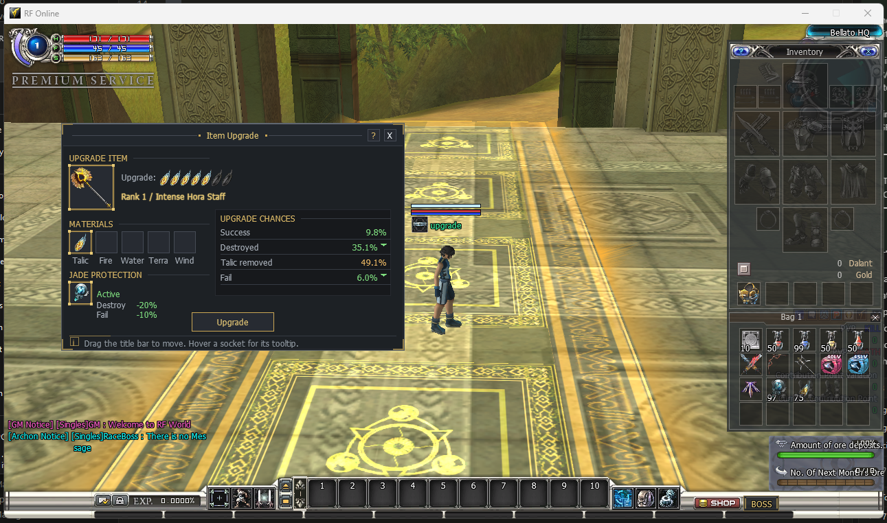

Item Upgrade & Jade
Item Upgrade & Jade Protection

What it does — and why you would use it
Stock RF Online item upgrading is a coin-flip you cannot hedge: every attempt can fail, strip the item's upgrades (talic removed), or destroy the item outright. This module lets you define jade protection materials that a player can slot into the upgrade window's JADE PROTECTION socket to bend those odds in their favour — for a price (one jade is consumed per protected attempt).
When a valid jade is slotted, it reshapes the four outcome probabilities before the roll happens:
- Destroyed is reduced by the jade's
DestroyProtectpercent. - Fail is reduced by the jade's
FailProtectpercent. - Talic removed is left unchanged.
- Whatever probability is taken away from Destroyed and Fail folds into Success, so the four still add up to exactly 100%.
Destroyed' = Destroyed * (1 - DestroyProtect/100)
Fail' = Fail * (1 - FailProtect/100)
Talic removed' = Talic removed (unchanged)
Success' = Success + (Destroyed - Destroyed') + (Fail - Fail')The jade table — which item is a protection material, how strongly, and which gear it may protect — lives in one plain-text Lua file. The in-game upgrade window (the chances panel, the jade breakdown and the item's upgrade-status icons) is part of the client and always present; it simply reflects whatever the server's module says.
How to activate it
-
Turn the feature on. Open .Server\Zoneserver\RF_Bin\Modules\ItemUpgradeProtection\ItemUpgradeProtection.ini in Notepad and set the
Enablekey under[General]:
Save the file. A running Zone server re-reads it on the next game tick — no restart needed.[General] Enable = 1 - Define your jades. Open the sibling ItemUpgradeProtection.lua and add one block per protection item — see Write the jade table.
- Check it in game. Open the Item Upgrade window, drop an upgradable item in, then put a configured jade in the JADE PROTECTION socket. The socket flips to Active, the jade's Destroy / Fail reduction appears beneath it, and the UPGRADE CHANCES panel updates live (lowered rows turn green with a ▼ marker).
ItemUpgradeProtection.ini and ItemUpgradeProtection.lua at startup — deleting either stops the server from booting. To switch the feature off, set Enable = 0 in the INI and leave the Lua file in place.Enable = 0 the upgrade roll behaves exactly like stock: no jade is ever consumed and the protect socket does nothing. The chances panel and the item's upgrade icons still show (they are always-on client UI) — only the jade reduction is inactive.How to write the jade table
Everything is one list of jade blocks. Copy a block, change the code / percentages / gear kinds, add as many as you like:
ItemUpgradeProtection = {
{ Code = "irjad01", DestroyProtect = 20, FailProtect = 10, AppliesTo = { "All" } }, -- Lucky Jade: weak, protects anything
{ Code = "irjad02", DestroyProtect = 30, FailProtect = 15, AppliesTo = { "Weapon" } }, -- Promise Jade: weapons only
{ Code = "irjad03", DestroyProtect = 50, FailProtect = 20, AppliesTo = { "Shield", "Cloak" } }, -- Wealth Jade: shield + cloak
{ Code = "irjad05", DestroyProtect = 40, FailProtect = 25, AppliesTo = { "Upper", "Lower", "Gloves", "Shoes", "Helmet" } }, -- Separation Jade: armor pieces, strong
}| Key | Meaning |
|---|---|
Code | The jade's item Code from ResourceItem.dat (the “Code” column, e.g. "irjad01"), as a quoted string. This is what the server matches against the slotted item. It is not the Model / graphic id (e.g. "A3012E") — matching on that fails and the upgrade is rejected with error 14. |
DestroyProtect | Percent (0..100) to reduce the Destroyed chance by. Values are clamped to 0–100. |
FailProtect | Percent (0..100) to reduce the Fail chance by. The probability freed from Destroy and Fail is added to Success. |
AppliesTo | Which equipment kinds this jade may protect. Valid names (case-insensitive): "Weapon", "Upper", "Lower", "Gloves", "Shoes", "Helmet", "Shield", "Cloak", or "All" (every kind). A block with an empty / invalid AppliesTo is ignored. |
- One jade per protected attempt. A successful protection consumes the slotted jade; if the attempt would not have destroyed / failed, the jade is untouched.
- Kind must match. A jade slotted against gear that is not in its
AppliesTolist is rejected with a clear “not a protection item for this gear” message — it never silently does nothing. - Unlisted items are not jades. Only the
Codes written here act as protection materials. - Comments and live reload. Anything after
--is ignored, and editing this file reloads on the game tick with no restart.
The in-game upgrade window
The window is laid out in two columns and is draggable by its title bar. Hover any socket for that item's normal tooltip.
| Area | What it shows |
|---|---|
| UPGRADE ITEM | The item you are upgrading, its icon, and — directly above the name — its current Upgrade status as the same row of talic icons the item's tooltip uses (filled sockets show the talic, empty sockets show a dim plate). The count and icons are read live from the item, never hardcoded, so a freshly-upgraded or downgraded item updates instantly. |
| MATERIALS | The talic / jewel sockets that feed the upgrade (Talic, Fire, Water, Terra, Wind). |
| JADE PROTECTION | The protect socket. It reads None when empty and Active when a matching jade is slotted, with the jade's own Destroy −X% / Fail −Y% figures shown beneath — taken straight from ItemUpgradeProtection.lua, not typed into the UI. |
| UPGRADE CHANCES | The four outcomes (Success, Destroyed, Talic removed, Fail) as a live preview the server computes. When a jade lowers a row, that value turns green with a small ▼ marker and Success climbs by the freed amount. These are the very numbers the server rolls against. |